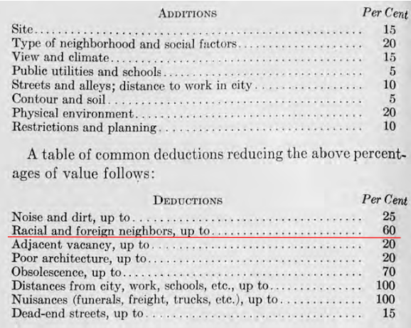

Case Study in Human Contexts and Ethics
Let’s immerse ourselves in the real world story of data scientists working for an organization called the Cook County Assessor’s Office (CCAO). Their job is to estimate the values of houses in order to assign property taxes. This is because tax burden in this area is determined by the estimated value of a house, which is different from its price. Since values change over time and there is no obvious indicators of value, they created a model to estimate the values of houses. In this chapter, we will dig deep into what problems that biased the models, the consequences to human lives, and how we can learn from this example to do better.
The Problem
In a report by the Chicago Tribune uncovered a major scandal. The team showed that the model perpetuated a highly regressive tax system which disproportionately burdened African American and Latinx homeowners in Cook County. How did they know?

In the field of housing assessment, there are standard metrics that assessors use across the world to estimate the fairness of assessments: coefficient of dispersion and price-related differential. These metrics have been rigorously tested by experts in the field, and are out of scope for our class. Calculating these metrics for the Cook County prices and found that the pricing created by the CCAO did not fall in acceptable ranges (See figure above). This by itself is not the end of the story, but a good indicator that something fishy was going on.

This then prompted them to investigate if the model itself was producing fair tax rates. Evidently, when accounting for the home owner’s income they found that the model actually produced a regressive tax rate (See figure above).
Digging further shows that not only was the system unfair to people across the axis of income, it was also unfair across the axis of race(See figure above). The likelihood that your home was under or over assessed was highly dependent on your race did not sit will with many home owners.
Spotlight: Appeals
What actually caused this to come about? The whole answer is a lot bigger than just models. At the end of the day, these are real systems that have a lot of moving parts. One of those moving parts was the appeals system. Homeowners are mailed the value their home is assess for by CCAO, and the homeowner can choose to appeal to a board of elected officials to try and change the listed value of their home, and thus how much they are taxed. In theory, this sounds like a very fair system: there is a human that oversees the final pricing of houses rather than just an algorithm. However, it ended up exacerbating the problems.
“Appeals are a good thing,” Thomas Jaconetty, deputy assessor for valuation and appeals, said in an interview. “The goal here is fairness. We made the numbers. We can change them.”

Here we can borrow lessons from Critical Race Theory. On the surface, everyone having the legal right to try and appeal is undeniable. However, not everyone has an equal ability to. Those who have the money to hire tax lawyers to appeal for them have a drastically higher chance trying and succeeding (See above figure). This model is part of a deeper institutional pattern rife with potential corruption.

Homeowners who appealed were generally underassessed relative to other homeowners (See above figure). Those with higher incomes pay less in property tax, tax lawyers are able to grow their business due to their role in appeals, and politicians are commonly socially connected to the aforementioned tax lawyers and wealthy homeowners. All these stakeholders have reasons to advertise the model as a integral part of a fair system. Here lies the value in asking questions. A system that seems fair on the surface may in actuality be unfair upon taking a closer look.
Human Impacts
The impact of the housing model extends beyond the realm of home ownership and taxation. Discriminatory practices have a long history within the United States, and the model served to perpetuate this fact. To this day, Chicago is one of the most segregated cities in the United States (source). These factors are central to informing us, as data scientists, about what is at stake.
Spotlight: Intersection of Real Estate and Race
Housing has been a persistent source of racial inequality throughout US History, amongst other factors. It is one of the main areas where inequalities are created and reproduced. In the beginning, Jim Crow laws were explicit in forbidding Persons of Color from Schools, public utilities, etc.

Today, while advancements in Civil Rights have been made, the spirit of the laws are alive in many parts of the US. The real estate industry was “professionalized” in the 1920’s and 1930’s by aspiring to become a science guided by strict methods and principles:
- Redlining: making it difficult or impossible to get a federally-backed mortgage to buy a house in specific neighborhoods coded as “risky” (red).
- What made them “risky” according to the makers of these was racial composition.
- Segregation was not only a result of federal policy, but developed by real estate professionals.
- The methods centered on creating objective rating systems (information technologies) for the appraisal of property values which encoded race as a factor of valuation (See figure below)
- This, in turn, influenced federal policy and practice

Source: Colin Koopman, How We Became Our Data (2019) p. 137
The Response: Cook County Open Data Initiative
The response started in politics. A new assessor, Fritz Kaegi, was elected and created a new mandate with two goals:
- Distributional equity in property taxation = properties of same value treated alike during assessments
- Creates new Office of Data Science

Question/Problem Formulation
- What do we want to know?
- What problems are we trying to solve?
- What are the hypotheses we want to test?
- What are our metrics for success?
The new Office of Data Science started by redefining their goals.
Accurately, uniformly, and impartially assess the value of a home.
- Following international standards (coefficient of dispersion)
- Predicting value of all homes with as little total error as possible.
Create a system that assesses house values that is fair to all people, across perceived racial and income differences.
- Disrupts the circuit of corruption (Board of Review appeals process)
- Eliminates regressivity
- Engenders trust in the system among all stakeholders
Data Acquisition and Cleaning
- What data do we have and what data do we need?
- How will we sample more data?
- Is our data representative of the population we want to study?
Example: Sales data

They also critically examined their original sales data:
- How was this data collected?
- When was this data collected?
- Who collected this data?
- For what purposes was the data collected?
- How and why were particular categories created?
For example, attributes can affect likelihood of appearing in the data. For example, housing data in the floodplains geographic region of Chicago were less represented than other regions.
The features can even be reported at different rates. Improvements in homes, which tend to increase property value, were unlikely to be reported by the homeowners.
Additionally, they found that there was simply more missing data in lower income neighborhoods.
Exploratory Data Analysis
- How is our data organized and what does it contain?
- Do we already have relevant data?
- What are the biases, anomalies, or other issues with the data?
- How do we transform the data to enable effective analysis?
Before the modeling step, they investigated a multitude of crucial questions:
- Which attributes are most predictive of sales price?
- Is the data uniformly distributed?
- Do all neighborhoods have up to date data? Do all neighborhoods have the same granularity?
- Do some neighborhoods have missing or outdated data?
Firstly, they found that the impact of certain features, such as bedroom number, were much more impactful in determining house value inside certain neighborhoods more than others. This informed them that different models should be used depending on the neighborhood.
They also noticed that low income neighborhoods had disproportionately spottier data. This informed them that they needed to develop new data collection practices–including finding new sources of data.
Prediction and Inference
- What does the data say about the world?
- Does it answer our questions or accurately solve the problem?
- How robust are our conclusions and can we trust the predictions?
Rather than using a singular model to predict sale prices (“fair market value”) of unsold properties, the CCAO fit machine learning models that discover patterns using known sale prices and characteristics of similar and nearby properties. It uses different model weights for each township.
Compared to traditional mass appraisal, the CCAO’s new approach is more granular and more sensitive to neighborhood variations.
Reports Decisions, and Conclusions
- How successful is the system for each goal?
- accuracy/uniformity of the model.
- fairness and transparency that eliminates regressivity and engenders trust.
- How do you know?
The model is not the end of the road. The new Office still sends homeowners their house evaluations, but now the data that they get sent back from the homeowners is taken into account. More detailed reports are being written by the office itself to democratize the information. Town halls and other public facing outreach helps involves the whole community in the process of housing evaluations, rather than limiting participation to a select few.
Key Takeaways
Accuracy is a necessary, but not sufficient, condition of a fair system.
Fairness and transparency are context-dependent and sociotechnical concepts
Learn to work with contexts, and consider how your data analysis will reshape them
Keep in mind the power, and limits, of data analysis
Lessons for Data Science Practice
Question/Problem formulation
- Who is responsible for framing the problem?
- Who are the stakeholders? How are they involved in the problem framing?
- What do you bring to the table? How does your positionality affect your understanding of the problem?
- What are the narratives that you’re tapping into?
Data Acquisition and Cleaning
- Where does the data come from?
- Who collected it? For what purpose?
- What kinds of collecting and recording systems and techniques were used?
- How has this data been used in the past?
- What restrictions are there on access to the data, and what enables you to have access?
Exploratory Data Analysis & Visualization
- What kind of personal or group identities have become salient in this data?
- Which variables became salient, and what kinds of relationship obtain between them?
- Do any of the relationships made visible lend themselves to arguments that might be potentially harmful to a particular community?
Prediction and Inference
- What does the prediction or inference do in the world?
- Are the results useful for the intended purposes?
- Are there benchmarks to compare the results?
- How are your predictions and inferences dependent upon the larger system in which your model works?
Reports, Decisions, and Solutions
- How do we know if we have accomplished our goals?
- How does your work fit in the broader literature?
- Where does your work agree or disagree with the status quo?
- Do your conclusions make sense?